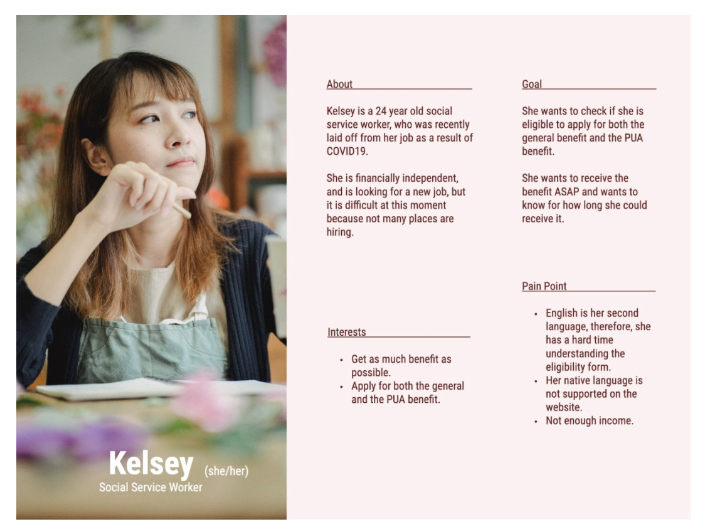
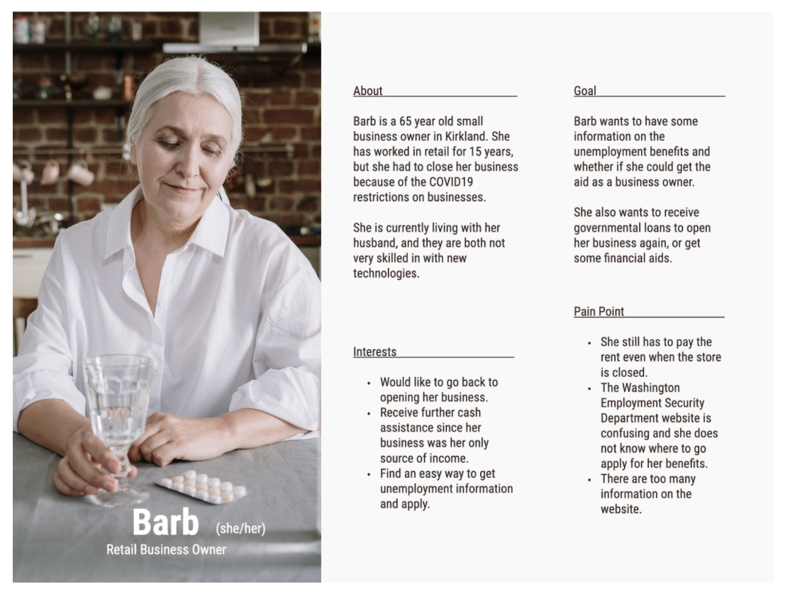

Persona



In my Design Methods class, my teammates and I worked together to redesign the Washington State Unemployment Eligibility Form into a more user-friendly and interactive survey. This new design enhances usability feedback and includes multiple language options as well as a live chat feature. As a Lead User Researcher on this project, I oversaw the research process. I developed the Interview Protocol, as well as conducted User Interviews and Usability Testings. I also designed low and high-fidelity wireframes using Figma, Whimsical, and Miro.
The Washington State Unemployment Eligibility Form is not user-friendly for the following reasons: it provides no feedback to users, the language is vague and unclear, and lastly the form is only available in English and Spanish. The unemployment eligibility form is currently available in PDF format and can be downloaded from their website. Since it is a PDF document, it is not interactive and lacks feedback, which means that users may not realize that they had made a mistake when filling out the form. Some people, particularly those who do not know the technology and whose English is not their first language, may also find the questionnaire confusing. For example, Question 5 asks if the individual has been laid-off, but does not fully clarify what is considered to be a layoff. Instead, it offers a link that guides users to a different page. Not only can this be frustrating for applicants, but it can also make the process longer.
Our approach was to make this PDF format more interactive and user-friendly by converting it into a survey. Surveys are simple, succinct, and straightforward. In addition, the survey will automatically inform them whether or not they are eligible, providing instant feedback and guiding them in the appropriate next steps. We also wanted to include increased definitions and clarify the language of the survey when possible. These procedures would also reduce the amount of time that applicants spend on filling out the form. We also wanted to ensure that the survey keeps accessibility in mind, and is available in a wide variety of languages. Our approach enabled users to have a clearer understanding of the application process and make the process simple and fast.
We completed a literature review consisting of two parts. First, we examined the literature on the experiences of receiving unemployment benefits in Washington. This particularly focused on the current experience of applicants during the COVID-19 pandemic. The second half examined form design, focusing on creating forms in a government context. We also completed competitive analysis, examining the forms used by other states to determine eligibility for unemployment benefits.
Five people participated in a user interview. The following is a rundown of the interview.
To better categorize and organize our data, my team and I developed an affinity diagram.
Our team worked together to produce a rough draft of our storyboard, and our Project Manager completed the polished storyboard below.

As a blueprint for our wireframes, we developed the following Information Architecture.
For both mobile and desktop, we first produced a low-fidelity wireframe. I worked on the mobile application in particular, as seen below. For a better user experience, we agreed as a team to use a survey rather than a PDF format.

We created High-fidelity wireframes after our low-fidelity wireframes. I worked on both the desktop and mobile versions, but I concentrated on the mobile version. The high-fidelity version is more interactive and user-friendly. New features included a progress bar, live support, and multiple language options.
After designing our high-fidelity prototype, I performed half of our usability tests. In our usability tests, we discovered some key findings. Our participants preferred the survey format to the PDF format 100% of the time. The survey took less time to complete and automatically assessed their eligibility status, which they considered more time-efficient and easier to use. Although our survey received positive user reviews, a few usability issues posed, prompting my team and myself to make final iterations.
Based on our findings we made our final iterations